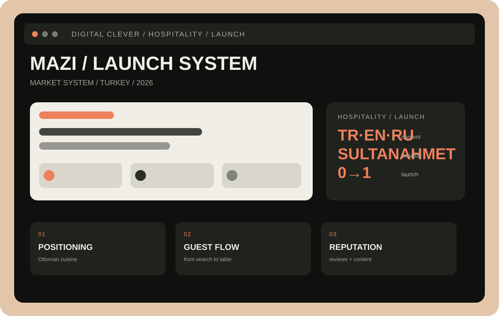

Позиционирование
Сформулировали, за что MAZI должны выбирать среди ресторанов исторического центра.
Для MAZI мы собрали основу запуска: позиционирование, контент и понятный путь гостя от поиска до стола.
В Sultanahmet высокий туристический шум: ресторану мало быть красивым, его должны выбрать среди десятков вариантов.
Нужно было объяснить опыт, кухню и уровень сервиса на трёх языках — до первого визита.

Hospitality · launch · reputation · Istanbul
MAZI выходит в пространство, где решение часто принимается быстро: по карте, отзывам, фотографиям и первым секундам на странице. Поэтому запуск нужно было строить вокруг доверия, а не только вокруг визуального контента.
Мы собрали единый язык бренда для русской, турецкой и англоязычной аудитории; связали меню, историю кухни, локацию, отзывы и social content в один маршрут гостя.
До первого визита человек должен уже понимать, какой опыт его ждёт.Решение Digital Clever
Сформулировали, за что MAZI должны выбирать среди ресторанов исторического центра.
Адаптировали смысл и тональность для туристов и локальной аудитории без механического перевода.
Меню, интерьер, сервис и история кухни показывают опыт до бронирования.
Выстроили систему отзывов и точек доверия, которые поддерживают органический выбор.
Для нового ресторана важна не разовая вспышка, а накопление доверия: понятный бренд, стабильный контент и отзывчивый гостевой путь.
Коммуникация для трёх аудиторий.
Локация встроена в аргументацию бренда.
Система готова масштабироваться вместе с рестораном.
Показываем кухню, сервис и атмосферу до того, как человек откроет карту.
Отзывы, меню и понятная информация помогают выбрать ресторан уверенно.
Контент и репутация превращают единичный визит в рекомендацию.
Расскажите о концепции и локации. В течение 24 часов отправим предварительный план запуска и продвижения.
Обсудить проект